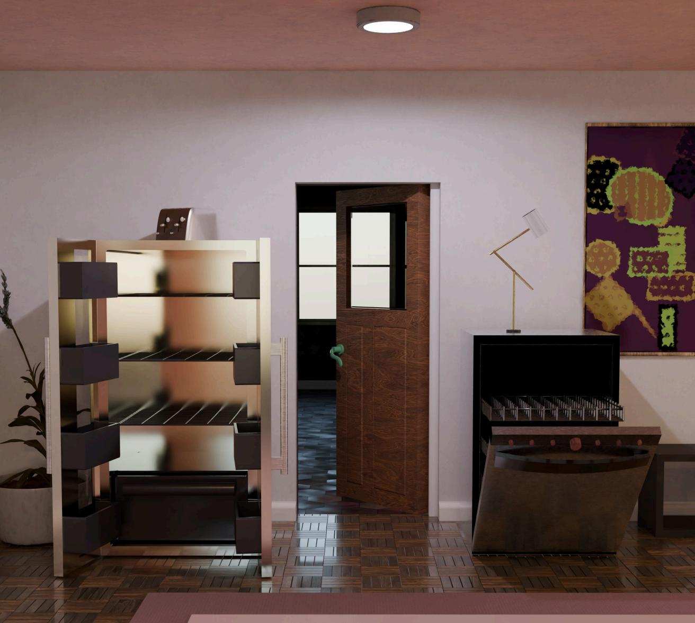
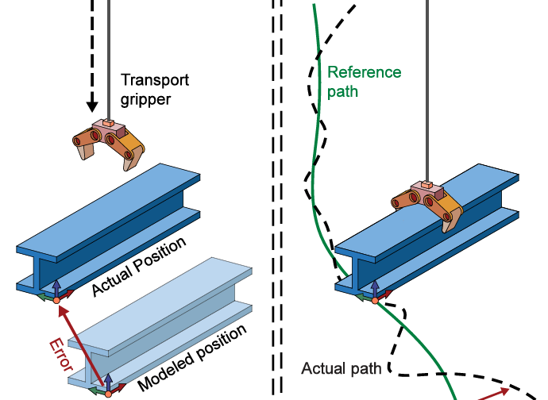

|
Tao Sun
I am a second year PhD student at McGill University and a visiting researcher at Computer Science Department, Princeton University, co-advised by
Yi Shao and Szymon Rusinkiewicz.
My research aims to build real-world robotic systems capable of generalized manipulation, especially for assembly tasks in construction industry, using end-to-end learning that leverages data from both real-world and simulation.
Email /
X(Twitter)
|
|
-->
|

|
Infinigen-Sim: Procedural Generation of Articulated Simulation Assets
Abhishek Joshi, Beining Han, Jack Nugent, Yiming Zuo, Jonathan Liu, Hongyu Wen, Stamatis Alexandropoulos,
Tao Sun,
Alexander Raistrick, Gaowen Liu, Yi Shao, Jia Deng
Under review
ArXiv
|
|

|
Robotic Motion Planning for Autonomous In-Situ Construction of Building Structures
Cong Zhao,
Jianye Chen,
Tao Sun,
Wei Fan,
Xiaoyan Sun,
Yi Shao,
Quanqin Guo,
Hailong Wang
Automation in Construction, 2025
Journal paper
|
Webpage design courtesy of Jon Barron website.
Last updated July 2025.
|
|
{kind=link}